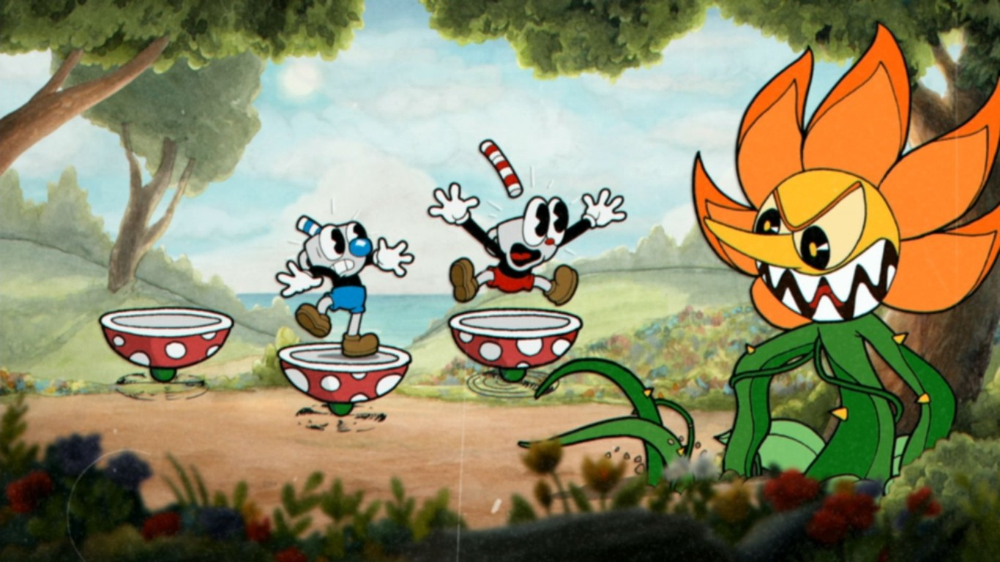

MR. Wheezy contra cuphead Clip Joint Calamity contra Cuphead y Mugman Cuphead contra Werner Werman  Cuphead y Mugman Contra Cagney Carnation Cuphead y Mugman contra Chps Bettigan Cuphead tirando los dados